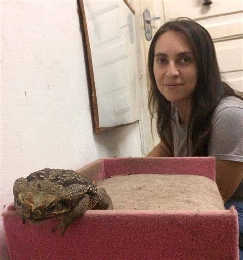

Tienda de Sapos Exóticos
En nuestra tienda encontrarás una gran variedad de sapos únicos y saludables, ideales para quienes buscan una mascota diferente y especial. Ofrecemos especies seleccionadas y cuidadas con esmero, garantizando su bienestar y adaptabilidad. Ya sea que desees un sapo como compañero curioso, para tu terrario decorativo o como parte de tus prácticas culturales, aquí encontrarás la opción perfecta. Además, brindamos asesoría sobre cuidados, alimentación y mantenimiento, para que disfrutes al máximo de tu nuevo amigo anfibio.
No te pierdas de esta gran oportunidad de tener tu amigo anfibio 
- Cuidados
- Alimentación